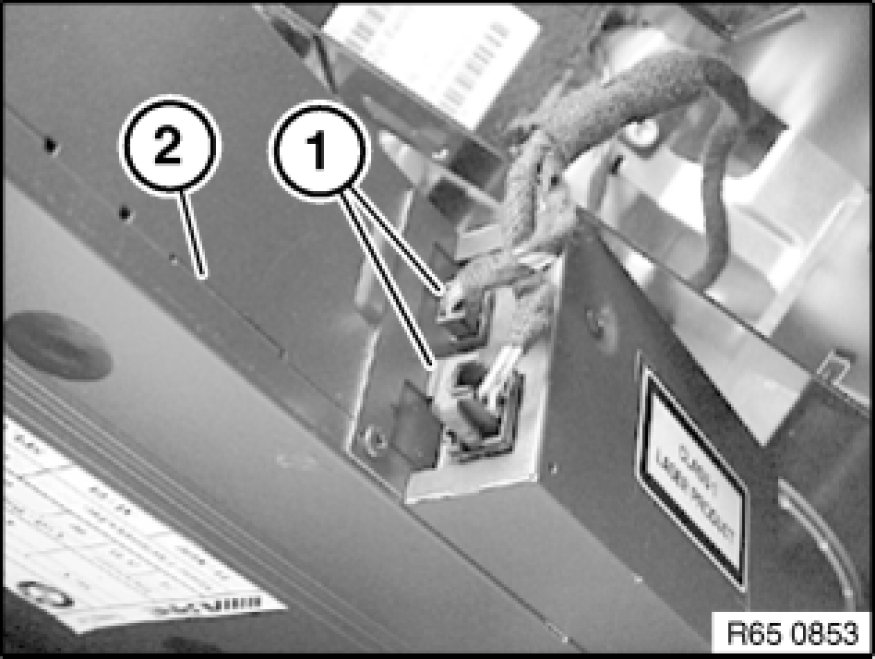

Removing and Installing/Replacing CD Changer
65 11 070 - Removing and installing/replacing CD changer

Important!
Read and comply with notes on protection against electrostatic damage (ESD protection) 61 35 ... Notes on ESD Protection (Electro Static Discharge).

Necessary preliminary tasks:
- Remove CD magazine
- Remove storage compartment 51 16 200 Removing and Installing Storage Compartment
Release screws (1) on both sides.
Tightening torque 65 11 1AZ [1][2]Radio, Stereo, and Compact Disc.
Pull CD changer (2) up and out.

Disconnect plug connections (1) and remove CD changer (2).

Replacement:
Before installation, remove all transport securing screws on equipment floor and seal openings with adhesive spots.
Follow instructions on setting the installation location Instructions on Setting the Installation Location on the CD Changer
on the CD changer.